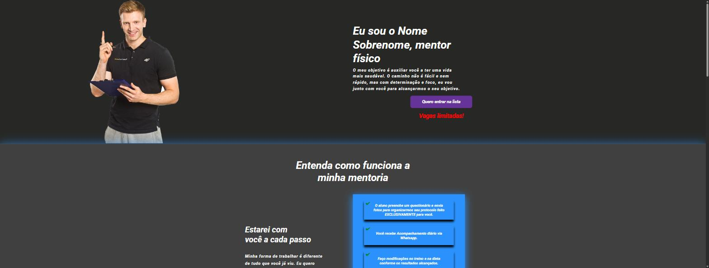
Personal
Site para divulgação de um personal trainer.
Desenvolvedor Web · São Paulo, Brasil
Comecei com HTML, CSS e JavaScript puro, testando ideias simples. Hoje uso IA (Claude Code) como parte real do meu processo de desenvolvimento — da arquitetura ao deploy — para construir sistemas web, apps mobile e automações completas, com mais velocidade e qualidade.
// 01 — sobre
No início, aprendi programação do jeito manual: lendo documentação, testando em pequenos projetos e fixando conceitos com JavaScript puro. Esses projetos estão guardados abaixo, sem retoques — é onde tudo começou.
Nos últimos meses passei a desenvolver com IA como parceira ativa de trabalho: eu defino arquitetura, escopo, decisões técnicas e faço a revisão de cada entrega — a IA acelera a escrita de código, sugere abordagens e ajuda a manter qualidade em projetos maiores do que eu conseguiria sozinho no mesmo tempo. O resultado é a seção de projetos com IA logo abaixo: sistemas web completos, apps mobile e produtos de automação, todos com deploy real.
// 02 — projetos com ia
🤖 Construído com ajuda de IATodos os projetos abaixo foram desenvolvidos com Claude Code como parceiro de desenvolvimento: eu conduzo arquitetura, decisões de produto e revisão técnica; a IA acelera implementação, debugging e boa parte do código. Nenhum é "gerado e pronto" — todos passaram por testes, ajustes e, na maioria dos casos, deploy em produção.
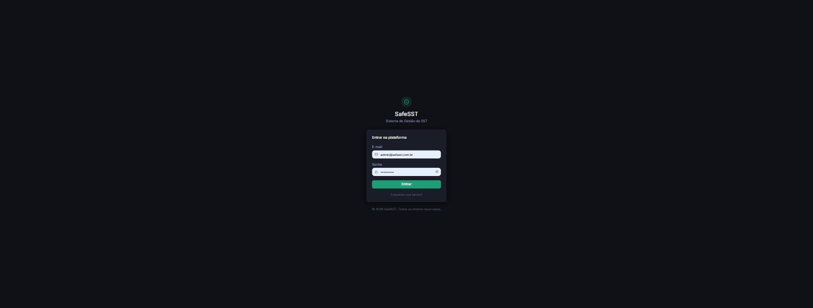
Sistema completo de gestão de Segurança do Trabalho
Plataforma web para empresas gerenciarem SST: inventário de agentes de risco (GHE), planos de ação gerados automaticamente, laudos técnicos em PDF e dashboard de indicadores.
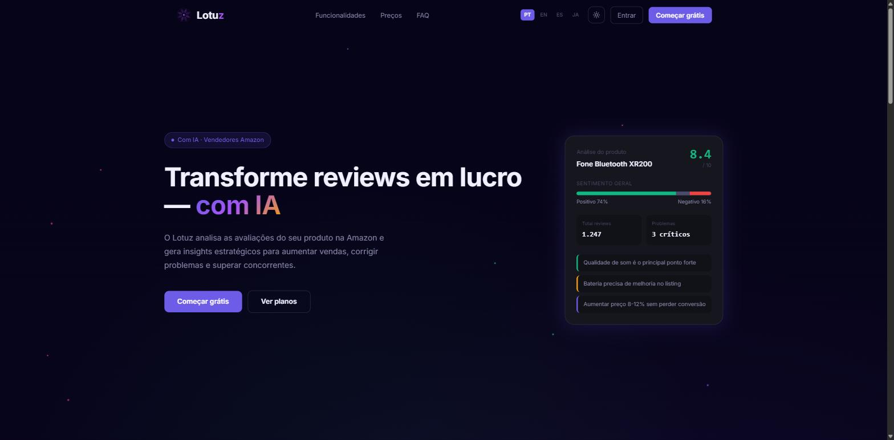
Inteligência de produto com IA para vendedores da Amazon
Analisa reviews e concorrência de produtos na Amazon em tempo real (scraping próprio, sem API paga) e devolve uma decisão clara — "vale testar ou não" — em segundos, com calculadora de margem e geração de criativos de anúncio.
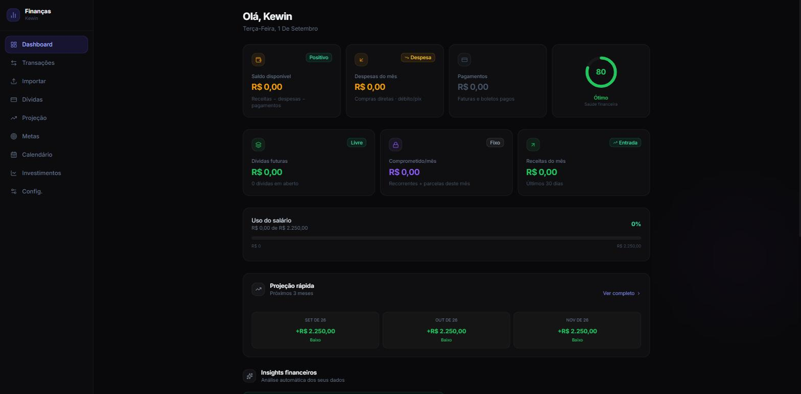
Dashboard pessoal de finanças com projeção automática
Controle financeiro pessoal com importação de extratos, controle de dívidas, metas, calendário de contas e projeção dos próximos meses, com insights automáticos sobre os gastos.
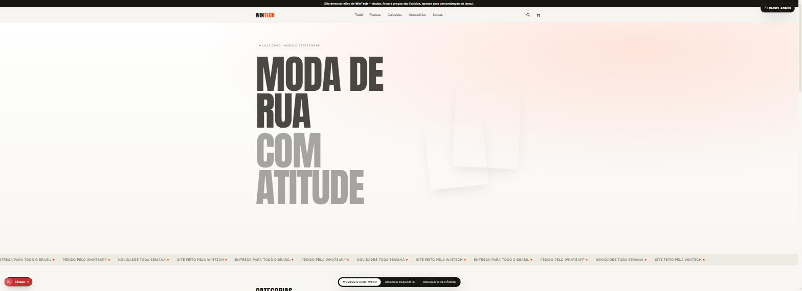
Demo de painel administrativo para lojas virtuais
Prévia funcional de um painel administrativo para lojas virtuais gerenciarem pedidos, produtos e métricas — projeto de agência, com dados fictícios.
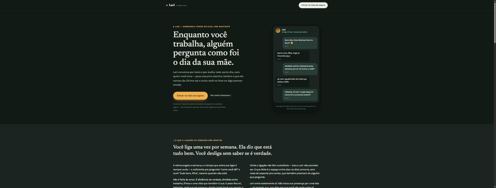
Landing page de uma assistente virtual para idosos
Página de captação de lista de espera para a Lari, uma "amiga virtual" que acompanha idosos via WhatsApp. Pré-lançamento — HTML, CSS e JavaScript puro, sem build.
App desktop que transforma vídeos longos em cortes virais, sozinho
Baixa o melhor vídeo entre os canais acompanhados, transcreve, seleciona os melhores trechos com IA, corta, legenda e publica automaticamente no YouTube em horário programado — todo dia, sem intervenção.
$ python highlight_detector.py --video partida.mp4 [ok] pico de áudio detectado 00:42 [ok] corte de cena confirmado 00:44 [ok] top 5 momentos rankeados › publicando no n8n workflow_
Gerador automático de vídeos "Top 5" a partir de clipes
Extensão do MyCut.AI: detecta o momento exato de um evento em um vídeo (pico de áudio + corte de cena), monta um ranking editado dos 5 melhores e publica via workflow automatizado em n8n.
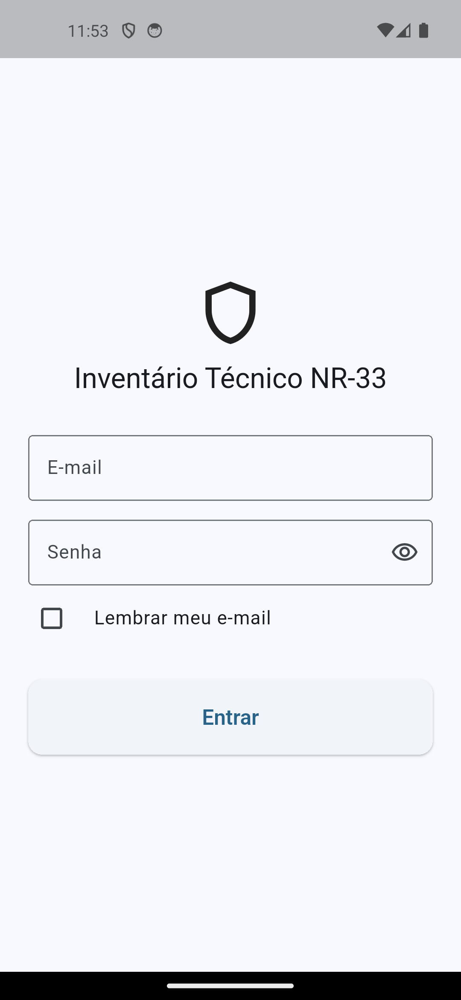
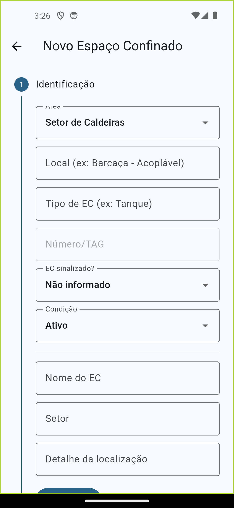
App de campo offline-first para inspeção de espaços confinados
App mobile em Flutter integrado a uma API própria (FastAPI) para técnicos de segurança cadastrarem espaços confinados em campo — mesmo sem internet — e gerarem laudos técnicos em PDF automaticamente. Parte do ecossistema SafeSST.
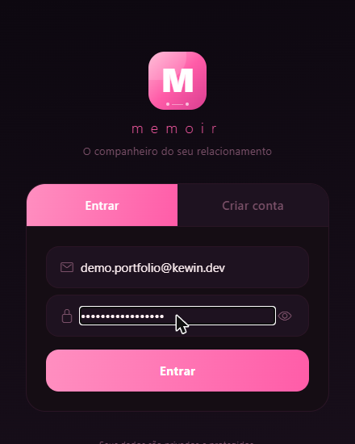
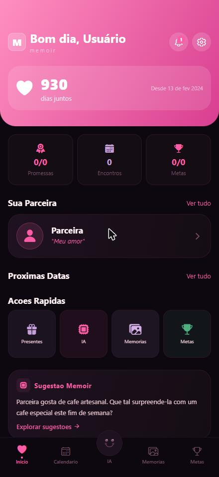
App mobile para casais organizarem a relação
Aplicativo React Native para casais: calendário compartilhado, linha do tempo de memórias, metas do casal, lembretes de presentes e um assistente de IA dentro do app.
// 03 — antes da ia
✋ Feito sozinho, sem IAOs primeiros projetos que fiz para aprender a programar — sem ajuda de IA, no puro tentativa-e-erro com HTML, CSS e JavaScript. Ficam aqui como registro de onde comecei.

Site para divulgação de um personal trainer.
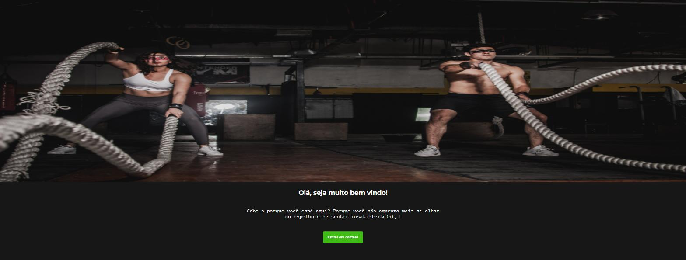
Formulário de envio de e-mails usando FormSubmit.
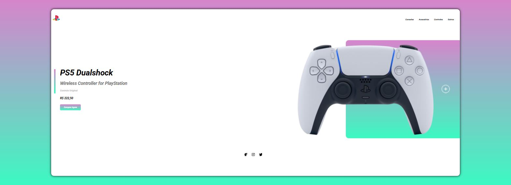
Página de vendas animada, reunindo o que eu tinha aprendido até então.
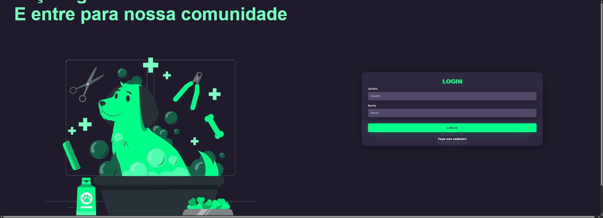
Rede social para donos de animais de estimação — projeto incompleto.
Projeto simples para fixar conhecimentos em JavaScript.
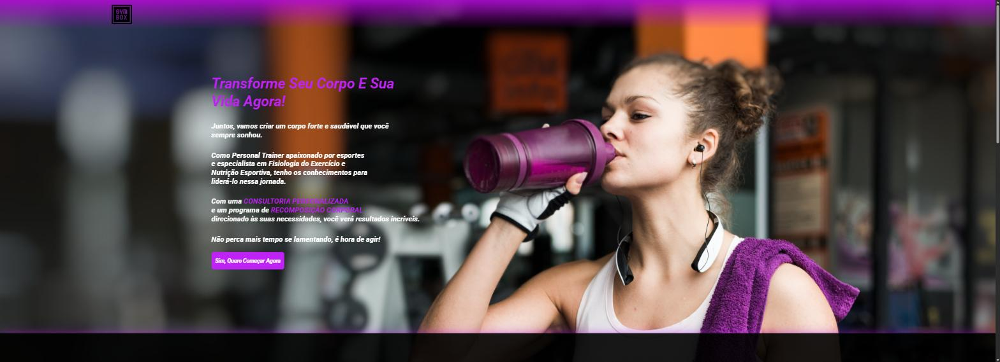
Site para divulgação de um personal trainer.